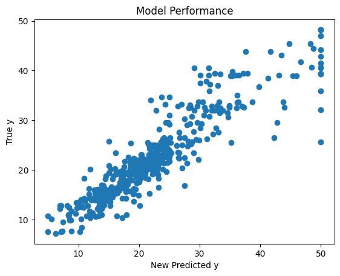
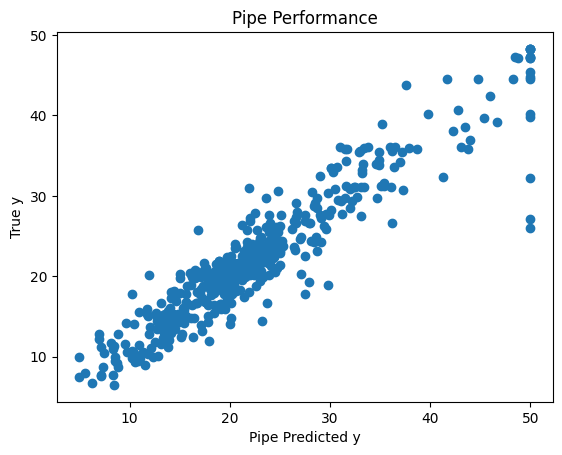

## install the version of dataidea used for this notebook
!pip install --upgrade dataideaRequirement already satisfied: dataidea in /home/jumashafara/work/dataidea/dataidea_websites/dataidea (0.1.2)
A pipeline is a series of data processing steps that are chained together sequentially. Each step in the pipeline typically performs some transformation on the data, such as preprocessing, feature extraction, feature selection, or model fitting.
In week 4, we introduced ourselves to Machine Learning Concepts, in week 5 we learned some statistical tests and we applied them in week 7 to find the best feature and transform them to efficient forms. In this section, we will build on top of those concepts to redefine what a Machine Learning model is and hence come up with a more efficient way of developing good Machine Learning models
First, let’s install the dataidea package, which will help us with loading packages and datasets with much more ease
## install the version of dataidea used for this notebook
!pip install --upgrade dataideaRequirement already satisfied: dataidea in /home/jumashafara/work/dataidea/dataidea_websites/dataidea (0.1.2)# Let's import some packages
from dataidea.packages import * # imports np, pd, plt, etc
from dataidea.datasets import loadDataset
from sklearn.neighbors import KNeighborsRegressor# loading the data set
data = loadDataset('boston')The Boston Housing Dataset
The Boston Housing Dataset is a derived from information collected by the U.S. Census Service concerning housing in the area of Boston MA. The following describes the dataset columns:
# looking at the top part
data.head()| CRIM | ZN | INDUS | CHAS | NOX | RM | AGE | DIS | RAD | TAX | PTRATIO | B | LSTAT | MEDV | |
|---|---|---|---|---|---|---|---|---|---|---|---|---|---|---|
| 0 | 0.00632 | 18.0 | 2.31 | 0 | 0.538 | 6.575 | 65.2 | 4.0900 | 1 | 296.0 | 15.3 | 396.90 | 4.98 | 24.0 |
| 1 | 0.02731 | 0.0 | 7.07 | 0 | 0.469 | 6.421 | 78.9 | 4.9671 | 2 | 242.0 | 17.8 | 396.90 | 9.14 | 21.6 |
| 2 | 0.02729 | 0.0 | 7.07 | 0 | 0.469 | 7.185 | 61.1 | 4.9671 | 2 | 242.0 | 17.8 | 392.83 | 4.03 | 34.7 |
| 3 | 0.03237 | 0.0 | 2.18 | 0 | 0.458 | 6.998 | 45.8 | 6.0622 | 3 | 222.0 | 18.7 | 394.63 | 2.94 | 33.4 |
| 4 | 0.06905 | 0.0 | 2.18 | 0 | 0.458 | 7.147 | 54.2 | 6.0622 | 3 | 222.0 | 18.7 | 396.90 | 5.33 | 36.2 |
In week 4, we learned that to train a model (for supervised machine learning), we needed to have a set of X variables (also called independent, predictor etc), and then, we needed a y variable (also called dependent, outcome, predicted etc).
# Selecting our X set and y
X = data.drop('MEDV', axis=1)
y = data.MEDVNow we can train the KNeighborsRegressor model, this model naturally makes predictions by averaging the values of the 5 neighbors to the point that you want to predict
# lets traing the KNeighborsRegressor
knn_model = KNeighborsRegressor() # instanciate the model class
knn_model.fit(X, y) # train the model on X, y
score = knn_model.score(X, y) # obtain the model score on X, y
predicted_y = knn_model.predict(X) # make predictions on X
print('score:', score)score: 0.716098217736928Now lets go ahead and try to visualize the performance of the model. The scatter plot is of true labels against predicted labels. Do you think the model is doing well?
# looking at the performance
plt.scatter(y, predicted_y)
plt.title('Model Performance')
plt.xlabel('Predicted y')
plt.ylabel('True y')
plt.show()
Feature selection is a process where you automatically select those features in your data that contribute most to the prediction variable or output in which you are interested.
In week 7 we learned that having irrelevant features in your data can decrease the accuracy of many models. In the code below, we try to find out the best features that best contribute to the outcome variable
from sklearn.feature_selection import SelectKBest
from sklearn.feature_selection import f_regression # score function for ANOVA with continuous outcome# lets do some feature selection using ANOVA
data_num = data.drop(['CHAS','RAD'], axis=1) # dropping categorical
X = data_num.drop("MEDV", axis=1)
y = data_num.MEDV
# using SelectKBest
test_reg = SelectKBest(score_func=f_regression, k=6)
fit_boston = test_reg.fit(X, y)
indexes = fit_boston.get_support(indices=True)
print(fit_boston.scores_)
print(indexes)[ 89.48611476 75.2576423 153.95488314 112.59148028 471.84673988
83.47745922 33.57957033 141.76135658 175.10554288 63.05422911
601.61787111]
[ 2 3 4 7 8 10]From above, we can see from above that the best features for now are those in indexes [ 2 3 4 7 8 10] in the num_data dataset. Lets find them in the data and add on our categorical ones to set up our new X set
# redifining the X set
new_X = data[['INDUS', 'NOX', 'RM', 'TAX', 'PTRATIO', 'LSTAT', 'CHAS','RAD']]Now that we have selected out the features, X that we thing best contribute to the outcome, let’s retrain our machine learning model and see if we are gonna get better results
knn_model = KNeighborsRegressor()
knn_model.fit(new_X, y)
new_score = knn_model.score(new_X, y)
new_predicted_y = knn_model.predict(new_X)
print('Feature selected score:', new_score)Feature selected score: 0.8324963639640872The model seems to score better with a significant increment in accuracy from 0.71 to 0.83. As like last time, let us try to visualize the difference in performance
plt.scatter(y, new_predicted_y)
plt.title('Model Performance')
plt.xlabel('New Predicted y')
plt.ylabel('True y')
plt.show()
I do not know about you, but as for me, I notice a meaningful improvement in the predictions made from the model considering this scatter plot
In week 7, we learned some advantages of scaling our data like:
In the next section, we will use the sklearn StandardScaler to rescale our numeric data and the OneHotEncoder to encode the categorical data. Read more about these transformers in the sklearn documentation
# importing the StandardScaler
from sklearn.preprocessing import StandardScalerscaler = StandardScaler() # instanciating the StandardScaler
standardized_data_num = scaler.fit_transform(
data[['INDUS', 'NOX', 'RM', 'TAX', 'PTRATIO', 'LSTAT']]
) # rescaline numeric features
standardized_data_num_df = pd.DataFrame(
standardized_data_num,
columns=['INDUS', 'NOX', 'RM', 'TAX', 'PTRATIO', 'LSTAT']
) # converting the standardized to dataframestandardized_data_num_df.head()| INDUS | NOX | RM | TAX | PTRATIO | LSTAT | |
|---|---|---|---|---|---|---|
| 0 | -1.287909 | -0.144217 | 0.413672 | -0.666608 | -1.459000 | -1.075562 |
| 1 | -0.593381 | -0.740262 | 0.194274 | -0.987329 | -0.303094 | -0.492439 |
| 2 | -0.593381 | -0.740262 | 1.282714 | -0.987329 | -0.303094 | -1.208727 |
| 3 | -1.306878 | -0.835284 | 1.016303 | -1.106115 | 0.113032 | -1.361517 |
| 4 | -1.306878 | -0.835284 | 1.228577 | -1.106115 | 0.113032 | -1.026501 |
from sklearn.preprocessing import OneHotEncoderone_hot_encoder = OneHotEncoder()
encoded_data_cat = one_hot_encoder.fit_transform(data[['CHAS', 'RAD']])
encoded_data_cat_array = encoded_data_cat.toarray()
# Get feature names
feature_names = one_hot_encoder.get_feature_names_out(['CHAS', 'RAD'])
encoded_data_cat_df = pd.DataFrame(
data=encoded_data_cat_array,
columns=feature_names
)encoded_data_cat_df.head()| CHAS_0 | CHAS_1 | RAD_1 | RAD_2 | RAD_3 | RAD_4 | RAD_5 | RAD_6 | RAD_7 | RAD_8 | RAD_24 | |
|---|---|---|---|---|---|---|---|---|---|---|---|
| 0 | 1.0 | 0.0 | 1.0 | 0.0 | 0.0 | 0.0 | 0.0 | 0.0 | 0.0 | 0.0 | 0.0 |
| 1 | 1.0 | 0.0 | 0.0 | 1.0 | 0.0 | 0.0 | 0.0 | 0.0 | 0.0 | 0.0 | 0.0 |
| 2 | 1.0 | 0.0 | 0.0 | 1.0 | 0.0 | 0.0 | 0.0 | 0.0 | 0.0 | 0.0 | 0.0 |
| 3 | 1.0 | 0.0 | 0.0 | 0.0 | 1.0 | 0.0 | 0.0 | 0.0 | 0.0 | 0.0 | 0.0 |
| 4 | 1.0 | 0.0 | 0.0 | 0.0 | 1.0 | 0.0 | 0.0 | 0.0 | 0.0 | 0.0 | 0.0 |
Let us add that to the new X and form a standardized new X set
transformed_new_X = pd.concat(
[standardized_data_num_df, encoded_data_cat_df],
axis=1
)transformed_new_X.head()| INDUS | NOX | RM | TAX | PTRATIO | LSTAT | CHAS_0 | CHAS_1 | RAD_1 | RAD_2 | RAD_3 | RAD_4 | RAD_5 | RAD_6 | RAD_7 | RAD_8 | RAD_24 | |
|---|---|---|---|---|---|---|---|---|---|---|---|---|---|---|---|---|---|
| 0 | -1.287909 | -0.144217 | 0.413672 | -0.666608 | -1.459000 | -1.075562 | 1.0 | 0.0 | 1.0 | 0.0 | 0.0 | 0.0 | 0.0 | 0.0 | 0.0 | 0.0 | 0.0 |
| 1 | -0.593381 | -0.740262 | 0.194274 | -0.987329 | -0.303094 | -0.492439 | 1.0 | 0.0 | 0.0 | 1.0 | 0.0 | 0.0 | 0.0 | 0.0 | 0.0 | 0.0 | 0.0 |
| 2 | -0.593381 | -0.740262 | 1.282714 | -0.987329 | -0.303094 | -1.208727 | 1.0 | 0.0 | 0.0 | 1.0 | 0.0 | 0.0 | 0.0 | 0.0 | 0.0 | 0.0 | 0.0 |
| 3 | -1.306878 | -0.835284 | 1.016303 | -1.106115 | 0.113032 | -1.361517 | 1.0 | 0.0 | 0.0 | 0.0 | 1.0 | 0.0 | 0.0 | 0.0 | 0.0 | 0.0 | 0.0 |
| 4 | -1.306878 | -0.835284 | 1.228577 | -1.106115 | 0.113032 | -1.026501 | 1.0 | 0.0 | 0.0 | 0.0 | 1.0 | 0.0 | 0.0 | 0.0 | 0.0 | 0.0 | 0.0 |
Now that we have the right features selected and standardized, let us train a new model and see if it is gonna beat the first models
knn_model = KNeighborsRegressor()
knn_model.fit(transformed_new_X, y)
new_transformed_score = knn_model.score(transformed_new_X, y)
new_predicted_y = knn_model.predict(transformed_new_X)
print('Transformed score:', new_transformed_score)Transformed score: 0.8734524530397529This new models appears to do better than the earlier ones with an improvement in score from 0.83 to 0.87. Do you think this is now a good model?
It turns out the above efforts to improve the performance of the model add extra steps to pass before you can have a good model. But what about if we can put together the transformers into on object we do most of that stuff.
The sklearn Pipeline allows you to sequentially apply a list of transformers to preprocess the data and, if desired, conclude the sequence with a final predictor for predictive modeling.
Intermediate steps of the pipeline must be ‘transforms’, that is, they must implement fit and transform methods. The final estimator only needs to implement fit.
Let us build a model that puts together transformation and modelling steps into one pipeline object
# lets import the Pipeline from sklearn
from sklearn.pipeline import Pipeline
from sklearn.compose import ColumnTransformernumeric_cols = ['INDUS', 'NOX', 'RM', 'TAX', 'PTRATIO', 'LSTAT']
categorical_cols = ['CHAS', 'RAD']# Preprocessing steps
numeric_transformer = StandardScaler()
categorical_transformer = OneHotEncoder()
# Combine preprocessing steps
preprocessor = ColumnTransformer(
transformers=[
('num', numeric_transformer, numeric_cols),
('cat', categorical_transformer, categorical_cols)
])
# Pipeline
pipe = Pipeline([
('preprocessor', preprocessor),
('model', KNeighborsRegressor())
])
print(pipe)Pipeline(steps=[('preprocessor',
ColumnTransformer(transformers=[('num', StandardScaler(),
['INDUS', 'NOX', 'RM', 'TAX',
'PTRATIO', 'LSTAT']),
('cat', OneHotEncoder(),
['CHAS', 'RAD'])])),
('model', KNeighborsRegressor())])# Fit the pipeline
pipe.fit(new_X, y)
# Score the pipeline
pipe_score = pipe.score(new_X, y)
# Predict using the pipeline
pipe_predicted_y = pipe.predict(new_X)
print('Pipe Score:', pipe_score)Pipe Score: 0.8734524530397529plt.scatter(y, pipe_predicted_y)
plt.title('Pipe Performance')
plt.xlabel('Pipe Predicted y')
plt.ylabel('True y')
plt.show()
We can observe that the model still gets the same good score, but now all the transformation steps, both on numeric and categorical variables are in a single pipeline object together with the model.
A few ads maybe displayed for income as resources are now offered freely. 🤝🤝🤝